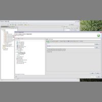
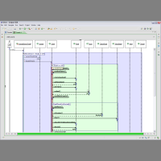
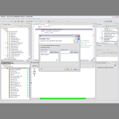
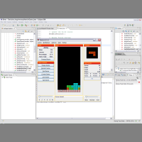

Diver Tutorials


Getting Started
Working With Sequence Diagrams


Working With Source Code
Feature Location
Special thanks to Chris Callendar for the usage of his Tetris game for these examples.